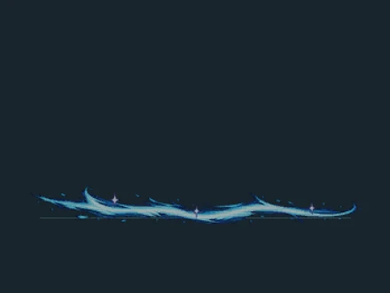
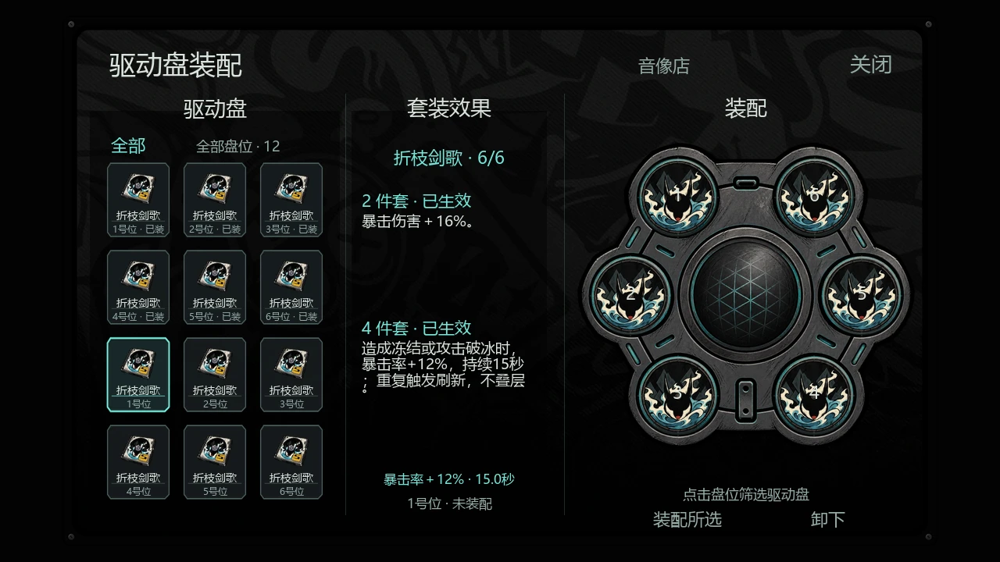
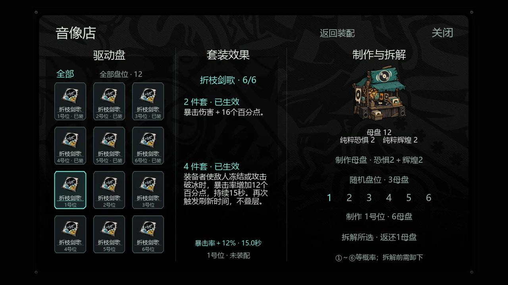
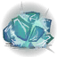

02 / COMBAT战斗
寒锋之下，攻守有序。
武痴狐狸稳定心神，暴击强化输出，霜染寒星抵御突袭。
✧武痴狐狸
免疫生物的负理智光环。生物的正理智光环仍然生效。
黑暗、潮湿、装备、建筑及环境光环、直接理智变化均按原规则计算。
✦暴击
基础暴击率为 0%，基础暴击总伤害为 150%。装配折枝剑歌两件套后提升至 166%，四件套触发时增加 12%暴击率，详见驱动盘与界面。星见雅穿戴霰落星殿时，按背包等级获得 8% / 16% / 24% 暴击率，普通伤害与位面伤害一同增幅。
实际造成正伤害的暴击命中，呈现“深雪”刀光：横向冰蓝斩线、前后环扫与碎冰星屑，约 0.6 秒消散。按攻击方向与目标体型调整，无额外暴击音效，也不增加额外伤害或冰冻。
❄霜染寒星
穿戴霰落星殿时，免疫一次攻击，并按该次防御前普通与特殊伤害总和的 10% 恢复生命。冷却 10 秒，换装不会刷新。
破盾向半径 1 世界单位内符合条件的敌人施加 1 冰冻值，遵守目标抗性；背包图标显示冷却轮转。触发时出现冰蓝护盾碎裂与外散冰片，视觉大小不代表冰冻范围。
❄ 冰冻值需要累积；实际冻结取决于目标的抗性。
03 / SIGNATURE WEAPON武器
妖刀 · 无尾
miyabi_wuwei一柄兼具寒意与锋芒的专属妖刀。
握持与命中
- 持有时移速增加15%，星见雅装备时攻击速度提升30%。
- 每次命中施加 0.5 冰冻值。
- 目标缺少冰冻能力、处于免冻状态或具有无限冰抗时，改为增加 10 普通物伤，仍经过防御。
- 普攻刀光随连续命中依次呈现：横斩 → 上挑 → 环斩 → 交错连斩 → 收尾环刃，第五段后循环。多道刀光仅为视觉效果，不增加单次伤害或冰冻次数。
同一目标连续有效命中才累积段数；换目标、挥空、受伤、冲刺、卸装或死亡会重置。停顿超过当前攻击间隔的 2.5 倍（最少 0.8 秒）也会重置。刀光按方向与目标体型调整，时长随攻速缩短。
鼠标右键特殊技：飞雪
装备妖刀后瞄准有效地形发动，基础伤害 ×2，升级位面伤害 ×2。冷却 3 秒，实际冲刺期间无敌。
默认无前摇，可选 15 帧（0.5 秒）或 30 帧（1 秒）。旧世界保存的前摇选择仍生效，可手动修改。冲刺两侧呈现分段青蓝火浪、地面短残光与碎星；有效命中播放蓝白交错刀光。配有专属冲刺音效，随动作阶段衔接，中断时停止。
飞雪特效预览
当前编译纹理离线合成 · 半速循环；实际距离、地面透视和遮挡以游戏为准。
 01 青蓝火浪
01 青蓝火浪
02 地面短残光 03 命中交错刀光
03 命中交错刀光制作配方 燧石 ×4+
燧石 ×4+ 金块 ×2+
金块 ×2+ 树枝 ×2科学机器 · 星见雅专属 · 人物 / 武器分类
树枝 ×2科学机器 · 星见雅专属 · 人物 / 武器分类
04 / AWAKENING修复与升级
让寒锋，染上青蓝。
金块修复
给予 1 个金块修复 50 次耐久，上限 200 次。满耐久时拒收。
双材料升级
消耗 20 个特化型异常组件 + 20 个音擎能源模块，获得无限耐久和 20 基础位面伤害，切换青蓝刀身与图标。
01先装备，再打开升级窗口物品栏右键未装备妖刀可快速装备；装备后右键武器格，打开两格升级窗口。地上的普通妖刀也可右键升级。
02上组件，下能源上格放特化型异常组件，下格放音擎能源模块，各至少 20 个。
03关闭窗口完成升级材料齐全后关闭窗口消耗并升级，余料退回；不足时材料保留，随武器存档，武器损坏时掉落。
不再接受约束静电升级，旧存档已升级妖刀仍保留。升级后保留闪电标记，并恢复原生右键卸下；持刀对地右键仍施放飞雪。
✦ 手持妖刀并在身体槽装备霰落星殿时，刀根出现卷曲青蓝幽火，刀身增加淡蓝流光；装备背包还会使星见雅三套衣装的发梢泛起蓝色辉光。
06 / EQUIPMENT容器 · 身体
霰落星殿
miyabi_pack随身而行的音擎背包，也是霜星守护的依托。
新角色出生自带，可放入主物品栏并装备于身体槽，不显示背部外观。拿起升级材料，对背包本体或物品图标使用“升级”，两种材料可分批累计给予，多余部分退回。
| 等级 | 容量 | 升至本级所需材料 | 星见雅暴击加成 |
|---|
| Ⅰ · 初始 | 8 格 | 出生获得 | +8% |
| Ⅱ · 进阶 | 12 格 | 组件 ×20 + 能源 ×20 | +16% |
| Ⅲ · 满级 | 14 格 | 组件 ×40 + 能源 ×40 | +24% |
升满级合计需要两种材料各 60 个。每次给予显示当前等级与两项进度，地面、主物品栏和穿戴时均支持；把材料放进内部格子只会普通收纳。不再接受金块升级。
装备联动
星见雅穿戴背包后，三套衣装的发梢都会出现渐淡的蓝色辉光，随原有发束摆动，戴帽时也适用。再手持妖刀可获得刀根幽火与刀身流光；不增加额外伤害或世界照明。
卸下背包、死亡或变为灵魂时清理外观，读档和复活后按装备恢复。护盾冷却属于角色，换包不刷新。背包与晓·围巾占用同一身体槽，不能同时装备。
旧存档升级进度如何保留？+
原有等级保留。旧金块未完成进度每 5 个折算两种材料各 1 个，余数向上取整，但至少仍需两种材料各 1 个才能升级；迁移只执行一次。已有新材料进度与物品正常保存。
07 / EQUIPMENT穿戴 · 头部
星见雅的发卡
miyabi_hairclip点亮荒野，也为每一次出手添一分锋芒。
任意佩戴者的普通与特殊 / 位面输出均获得 ×1.1 增幅，仍经过目标防御。无耐久，始终不增加额外装备外观。
穿戴时周身出现淡黄四角星，并持续照明，照明范围为启迪之冠的 1.5 倍。卸下或死亡后清理星光与照明，物品栏及落地状态不发光。
制作配方金块 ×8+ 石头 ×8科学机器 · 星见雅专属制作
石头 ×8科学机器 · 星见雅专属制作
08 / DAWN ACCESSORIES穿戴 · 头部
晓·渔夫帽
miyabi_dawn_hat让晨风从耳畔穿过。
独立的象牙白渔夫帽，可搭配三套衣装。佩戴在头部槽，无耐久，春夏隔热 240，秋冬保暖 120，随世界季节自动切换，穿戴时生效。即使开启隐藏装备贴图，也会显示这顶专属帽。
星见雅佩戴时保留狐耳；当前帽型带独立金色四角星扣，保留耳孔与完整狐耳，无灰蓝帽带。帽子与发卡占用同一头部槽，不能同时装备。
每件制作配方 蛛丝 ×4+
蛛丝 ×4+ 绳子 ×1科学机器 · 星见雅专属制作 · 人物 / 服饰分类
绳子 ×1科学机器 · 星见雅专属制作 · 人物 / 服饰分类
09 / DAWN ACCESSORIES穿戴 · 身体
晓·围巾
miyabi_dawn_scarf将黎明的暖意围在肩上。
独立的暖色围巾，可搭配三套衣装，不属于「晓」皮肤本身。无耐久，全年保暖 120，与帽子在秋冬可叠加至 240 保暖；开启隐藏装备贴图时仍会显示。
背面不显示被长发遮住的围巾部分，正面与侧面保留。围巾占用身体槽，与霰落星殿互斥。
✦ 换上围巾会卸下背包，因此背包提供的暴击率、霜染寒星护盾与妖刀装备联动幽火也会随之停止。
每件制作配方蛛丝 ×4+绳子 ×1科学机器 · 星见雅专属制作 · 人物 / 服饰分类
11 / DRIVE INTERFACE驱动盘 · 套装
折枝剑歌
miyabi_drive_1 – 6六个盘位，一套与寒锋相呼应的驱动盘。
星见雅右上角状态区下方的圆形头像按钮可打开驱动盘页面。左侧是驱动盘列表，中间显示套装效果和增益剩余时间，右侧是六槽装配盘。

界面离线示意 · 展示用测试数据，文字按网页简化装配与筛选
盘位从左上开始逆时针排列：左上 1、左中 2、左下 3、右下 4、右中 5、右上 6。选择持有的驱动盘并点击“装配所选”，它会装入自己的固定盘位；每个盘位只能装一个。
点击盘位可筛选，重复点击或选择“全部”取消筛选；列表每页最多 12 格，仅显示自己持有和已装配的驱动盘。卸下或替换时物品返回物品栏，请预留空间。
2 件套锐意凝于锋
暴击伤害增加 16%，基础总暴击伤害由 150% 变为 166%。
4 件套冰破而寒生
装备者使敌人真正冻结，或攻击打破其冻结时，暴击率增加 12%，持续 15 秒。
❄ 四件套重复触发只刷新时间，不叠层；仅积累冰冻值或自然解冻不触发。总暴击率上限 100%，六件只生效一份两件套和四件套。
卸下至不足四件或死亡时清除四件套增益。装配记录和剩余增益时间随角色保存；死亡时已装驱动盘掉落。新旧存档均可使用，不自动赠送驱动盘，也不要求穿戴霰落星殿。
背包装备动画
身体槽装备霰落星殿时，装配盘中央播放约 6 秒动画，每次开页播放一次，末帧停留；筛选不重播，卸装时隐藏。
让界面，停在顺手的位置。
- 驱动盘头像按钮：按住鼠标右键拖动，中键复位。
- 独立背包面板：从边框或格子外空白处右键拖动，面板内中键复位；格子内物品操作保留。
- 整合背包：右键拖动背包栏旁箭头，中键复位。
三种位置分别在本机记忆，重开及背包升级后恢复。页面支持关闭按钮、Esc 和手柄取消；打开时接管操作，但不暂停联机世界。
12 / RECORD SHOP建筑 · 制作与拆解
音像店
miyabi_recordshop制作母盘和折枝剑歌，也为旧唱片找到新的归处。
星见雅可在人物或建筑分类使用炼金引擎解锁。右键音像店打开制作页，也可从驱动盘页面切换；制作与拆解需在音像店 4 世界单位内。
音像店配方 石砖 ×5+
石砖 ×5+ 木板 ×5+
木板 ×5+ 电子元件 ×5炼金引擎 · 星见雅专属制作 · 人物 / 建筑分类
电子元件 ×5炼金引擎 · 星见雅专属制作 · 人物 / 建筑分类 
界面离线合成 · 材料数量和列表为展示用测试数据高保真母盘
miyabi_masterdisc制作驱动盘的材料，每次制作 1 个，最多堆叠 40 个。
母盘配方纯粹恐惧 ×2+
纯粹辉煌 ×2在音像店附近制作 | 操作 | 材料 / 返还 | 说明 |
|---|
| 随机盘位 | 母盘 ×3 | 获得 1 个折枝剑歌，1～6 号位等概率 |
| 指定盘位 | 母盘 ×6 | 获得 1 个所选盘位的折枝剑歌 |
| 拆解驱动盘 | 返还母盘 ×1 | 选中未装配的驱动盘，点击拆解并再次确认 |
已装配的驱动盘需先卸下再拆解。材料不足、空间不足或距离不符时不消耗材料。
13 / WARDROBE外观
一人，三种风景。
默认衣装、银庭花信与「晓」均随模组提供，共享角色能力、出生物品与专属灵魂。
 衣柜简笔画
衣柜简笔画默认衣装
深色衣装与长发，保留标志性的发卡、袖饰和高跟鞋。

专属灵魂
三套衣装共用，复活后恢复所选衣装。
MIYABI / LITTLE MOMENTS轻移鼠标，拨动星光
旅途，也有小小闲暇。
片刻甜意 01 / MELON一点好奇 02 / CURIOUS 14 / GET STARTED指南
整装，进入永恒领域。
01启用模组这是饥荒联机版人物模组，服务端与所有客户端均需启用。
02选择星见雅可选默认、银庭花信或晓，新出生获得妖刀与霰落星殿；读档不补发。
03按需调整配置默认隐藏普通头部与身体装备贴图，晓·渔夫帽、晓·围巾及手持工具仍显示，装备属性保留；飞雪默认无前摇，可在模组配置选择 15 或 30 帧。
有哪些内容已实现？+
角色与三套衣装、专属灵魂、武痴狐狸特质、小无尾伙伴、妖刀及其五段普攻刀光、飞雪与冲刺音效、背包、发卡、季节装备、升级材料、暴击与护盾反馈、驱动盘界面及 HUD 拖动均已加入。折枝剑歌的装配与套装效果、音像店制作拆解已加入；角色专属语音尚未实现。
本轮有哪些重要变化？+
v170 加入折枝剑歌六盘位装配、两件套与四件套效果、音像店、高保真母盘及驱动盘制作拆解。保留 HUD 拖动和位置记忆。更新模组后应完全退出并重启游戏。
这份指南对应哪个版本？+
依据本地 0.3.123-drives-v170 整理，更新于 2026 年 10 月 27 日。当前记录为离线检查通过，实机效果仍待游戏内验证。

 妖刀 · 无尾
妖刀 · 无尾 霰落星殿
霰落星殿


 组件 ×20
组件 ×20 能源 ×20
能源 ×20